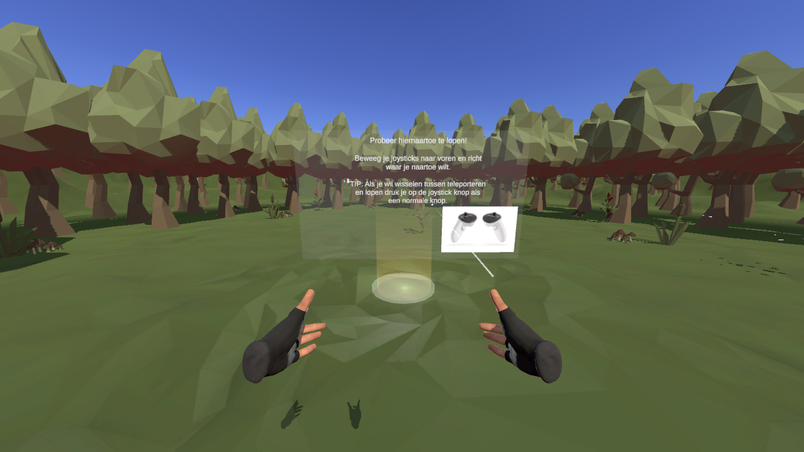

Cafe Game
-VR-café met mini-game en interactie-

Voor dit project bouwden we een VR-supermarkt in ProBuilder, maar ik koos voor een café met dezelfde functionaliteit. Ik voegde interactieve elementen toe zoals betaalbaar eten, een alarmsysteem, speelbare instrumenten en een café-mini-game, waar ik het meest trots op ben.
Details
Uitgekomen: Maart 2025
Engine: Unity (VR)
Taal: C#
Teamgrootte: 1
Rol: Gameplay Developer
Tijd: 4 weken
Mijn bijdrage
VR Tutorial & Intro
- Een tutorial scene waarin spelers leren hoe VR werkt.
Interactieve Café-elementen
- Betaalbaar eten toegevoegd dat spelers kunnen oppakken.
- Alarmsysteem geprogrammeerd: gaat af als spelers proberen de deur uit te gaan zonder te betalen.
- Speelbare instrumenten geïmplementeerd voor extra interactie en sfeer.
Mini-game & Gameplay
- Mini-game ontworpen waarbij spelers zelf eten kunnen bereiden door ingrediënten te combineren.
- Spawning van gerechten afhankelijk gemaakt van de juiste ingrediëntencombinaties.
- Klanten laten verschijnen met verschillende bestellingen die de speler in de mini-game moet bereiden.
//mini game script
void Update()
{
timer += Time.deltaTime;
float TimeRemaining = timeForCustomers - timer;
timerText.text = Mathf.Round(TimeRemaining).ToString();
//turn the hurry up text on if there is only 1/3 time left of the timer
float HurryUpTime = timeForCustomers / 3;
if (TimeRemaining < HurryUpTime)
{
hurryUpText.text = "Hurry Up!";
}
else
{
hurryUpText.text = "";
}
// If the timer reaches 60 seconds, change the customer and meal or if the right item is placed in the snappoint
if (timer >= timeForCustomers || givefoodtocustomers.GoToNextCustomer == true)
{
if (timer >= timeForCustomers && givefoodtocustomers.GoToNextCustomer == false)
{
//update score - 2;
}
else
{
//update score +1;
}
givefoodtocustomers.GoToNextCustomer = false;
timer = 0f;
CHOSENcustomer.SetActive(false);
randomMeel = Random.Range(1, 7);
randomCustomer = Random.Range(1, 8);
switch (randomCustomer)
{
case 1: CHOSENcustomer = Customer1; break;
case 2: CHOSENcustomer = Customer2; break;
case 3: CHOSENcustomer = Customer3; break;
case 4: CHOSENcustomer = Customer4; break;
case 5: CHOSENcustomer = Customer5; break;
case 6: CHOSENcustomer = Customer6; break;
case 7: CHOSENcustomer = Customer7; break;
default: Debug.Log("Random customer was out of bounds"); break;
}
switch (randomMeel)
{
case 1: CHOSenMeal = 1; mealText.text = "Ik wil een taart!"; break;
case 2: CHOSenMeal = 2; mealText.text = "Ik wil een broodje..."; break;
case 3: CHOSenMeal = 3; mealText.text = "Mag ik een bagel?"; break;
case 4: CHOSenMeal = 4; mealText.text = "Drankje 1 alsjeblieft!"; break;
case 5: CHOSenMeal = 5; mealText.text = "HMMM, drankje 2 ziet er wel goed uit."; break;
case 6: CHOSenMeal = 6; mealText.text = "Zou ik drankje 3 mogen proberen?"; break;
default: Debug.Log("Random meal was out of bounds"); break;
}
CHOSENcustomer.SetActive(true);
}
}

